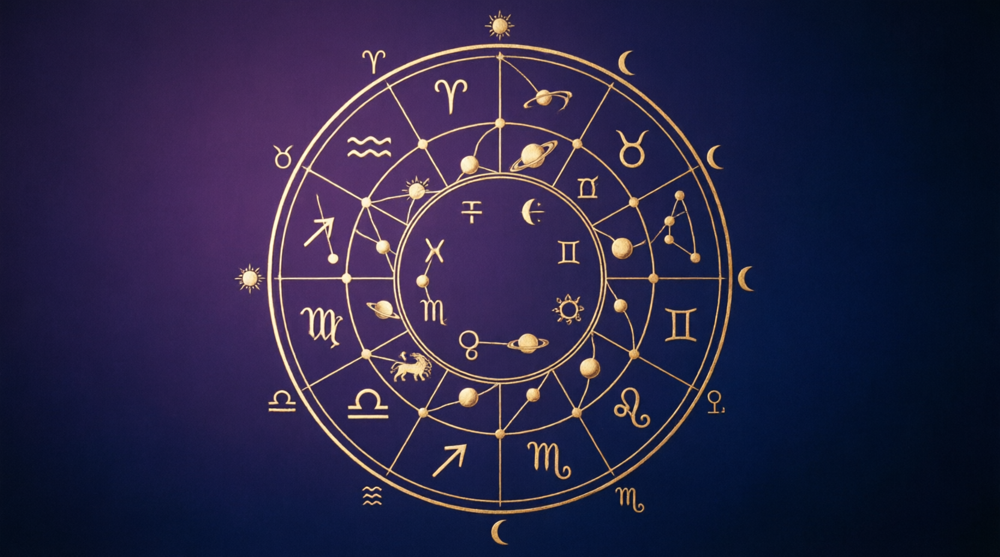

Leitura artesanal · mapa astral + áudio + tarô
Não é um PDF automático gerado por um site em 30 segundos. É uma leitura manual, grau por grau, do seu mapa de nascimento. Com áudio explicando os pontos que mais importam na sua vida.
Quero meu mapaTalvez você já tenha sentido isso
Tem gente que passa a vida inteira seguindo roteiro dos outros. Lê o horóscopo do jornal, assiste vídeo de signo no Instagram, tenta encaixar a própria vida numa descrição de dois parágrafos que serve pra milhões de pessoas ao mesmo tempo.
E nada disso responde a pergunta que de verdade incomoda:
Essas perguntas não se respondem com signo solar e ascendente numa tela de celular. Elas precisam de um olhar que leve em conta cada posição, cada grau, cada área da sua vida. Porque o seu mapa não é igual ao de ninguém. Nem ao de quem nasceu no mesmo dia que você.
Por que demora 25 dias
Existem sites que geram um PDF automático com seu mapa em menos de um minuto. O texto é bonito, tem umas imagens legais, mas é o mesmo texto pra todo mundo que tem Vênus em tal signo.
O problema é que meio grau muda o significado inteiro.
Um exemplo real
Imagine duas pessoas com Vênus na área dos relacionamentos.
A primeira tem Vênus a 3 graus. Na leitura, isso aponta pra uma verdadeira missão de vida na área de relacionamentos. Parcerias não são um detalhe na vida dela, são o eixo central. Ela vai precisar aprender, errar, amadurecer através do outro.
A segunda tem Vênus a 4 graus. Meio grau a mais. A interpretação já muda: ela não vai ter dificuldades em encontrar parceiros. A dinâmica é outra, o desafio é outro, o caminho é outro.
Mesma área da vida. Mesmo planeta. Meio grau de diferença. Duas vidas completamente diferentes.
Um algoritmo genérico não enxerga isso. Eu enxergo. É por isso que cada mapa que eu faço tem entre 150 e 250 páginas. Porque cada grau precisa ser lido, contextualizado e explicado dentro da sua vida.
Isso não se faz em meia hora. Leva tempo porque é manual. Porque cada página é escrita pensando em você, não num modelo que serve pra todo mundo.
O que você vai entender
Seu mapa não é sobre signos genéricos. É sobre como os astros se posicionaram no momento exato em que você nasceu, e o que isso diz sobre 12 áreas concretas da sua existência:

Quem você é, como se apresenta ao mundo, sua essência
Como você ganha, gasta, se relaciona com recursos
Como você fala, escreve, se expressa e aprende
Raízes, infância, relação com pais e base emocional
Filhos, hobbies, paixões, expressão artística
Corpo, trabalho diário, hábitos, bem-estar
Casamento, sociedade, o outro, contratos
Mudanças profundas, intimidade, heranças, crises
Expansão, filosofia, aprendizado, espiritualidade
Vida pública, profissão, legado, reconhecimento
Grupos, redes, sonhos coletivos, esperanças
Inconsciente, vida interior, transcender, solitude
Cada uma dessas áreas é lida em profundidade, com a posição dos planetas, os graus exatos, e o que isso significa na prática pra você. Não é horóscopo de revista. É um mapa da sua vida.
O que você recebe
Seu mapa astral de nascimento completo, lido grau por grau. O tamanho varia porque cada mapa é único: a posição exata dos seus planetas determina a profundidade de cada área da sua vida.
Uma gravação minha explicando os pontos mais importantes do seu mapa. Os destaques, o que merece atenção, o que você precisa entender primeiro. Pra você ouvir no carro, na caminhada, quando quiser.
🎁 Bônus exclusivo
Além do mapa completo, você recebe uma leitura de tarô personalizada, agendada conforme sua disponibilidade. Eu faço a tiragem, envio as fotos das cartas e um áudio explicando cada ponto sobre o seu momento atual.
A leitura pode ser agendada no mesmo dia da entrega do mapa, de acordo com a disponibilidade da agenda. Se o dia não funcionar pra você, a gente marca outro horário que encaixe na sua rotina.
Vagas limitadas por dia pra manter a qualidadeComo funciona
Clica no botão desta página e me manda uma mensagem. Eu te explico o processo e tiro qualquer dúvida.
Data, horário exato e cidade onde nasceu. Se não souber a hora, me avisa que a gente conversa sobre isso.
Leitura manual, sem pressa, sem atalho. Até 25 dias úteis pra ficar pronto. Eu aviso quando começar e quando finalizar.
PDF completo, áudio e agendamento da leitura de tarô, direto no seu celular. Sem plataforma pra criar conta, sem complicação.
Pra quem é (e pra quem não é)
Investimento
De R$ 800
R$ 550
ou em até 12x no cartão
R$ 500 no PIX (pagamento à vista)
✓ PDF de 150 a 250 páginas (leitura grau por grau das 12 áreas da vida)
✓ Áudio personalizado com os pontos principais
✓ Leitura de tarô agendada com fotos e áudio (bônus)
✓ Entrega no WhatsApp em até 25 dias úteis
Atenção: A leitura de tarô é oferecida no mesmo dia da entrega do mapa, mas as vagas são limitadas. Se a agenda estiver cheia, marcamos outro horário que funcione pra você.
Quero encomendar meu mapaPagamento direto
Se você já decidiu e quer pagar agora, use os dados abaixo. Após o pagamento, me envie o comprovante no WhatsApp junto com seus dados de nascimento.
💰 PIX Copia e Cola · R$ 500
Prefere pagar no cartão em até 12x? Me chama no WhatsApp que a gente resolve.
Perguntas frequentes
Me avisa antes de fechar. Sem o horário exato, algumas áreas do mapa ficam imprecisas e a leitura perde profundidade. Dependendo do caso, a gente conversa sobre alternativas, mas o ideal é sempre com o horário.
Porque não uso gerador automático. Cada posição planetária do seu mapa é lida individualmente, contextualizada com as outras posições, e escrita à mão (na prática, digitada, mas o raciocínio é manual). Um mapa de 200 páginas não se faz num fim de semana.
Sim. O PDF é escrito pra ser entendido por qualquer pessoa, não por astrólogo. E o áudio serve exatamente pra isso: eu te explico os pontos mais importantes numa conversa normal, sem termo técnico jogado sem explicação.
Aceito PIX (R$ 500) ou cartão de crédito em até 12x (R$ 550, juros da máquina). O PIX você pode pagar direto aqui na página, pra cartão me chama no WhatsApp.
Pode, desde que você tenha os dados de nascimento completos dela (data, hora e cidade).
Depois que seu mapa fica pronto, eu te ofereço um horário pra leitura de tarô no mesmo dia. Se não der pra você, a gente agenda outro. Eu faço a tiragem, envio as fotos das cartas e um áudio explicando tudo. Faço no máximo algumas leituras por dia pra manter a qualidade, então pode ser que o horário do mesmo dia não esteja disponível. Mas sempre tem vaga em outro dia.
Me chama no WhatsApp. Sem compromisso, sem formulário gigante. Uma conversa e a gente resolve.
Chamar no WhatsApp